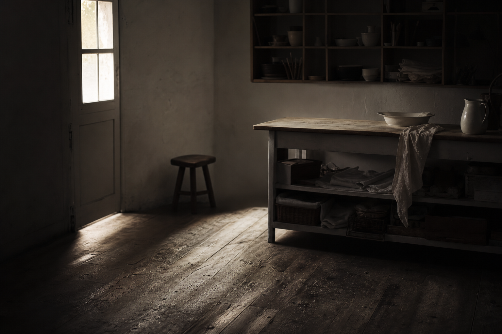
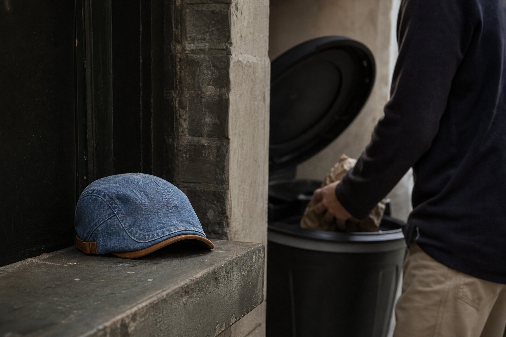
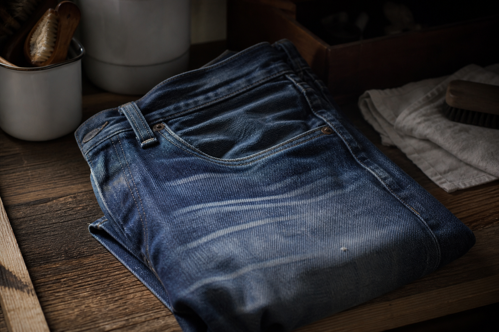
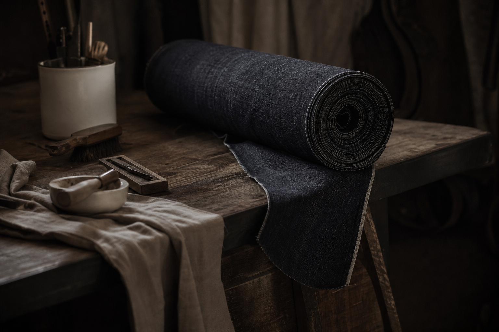
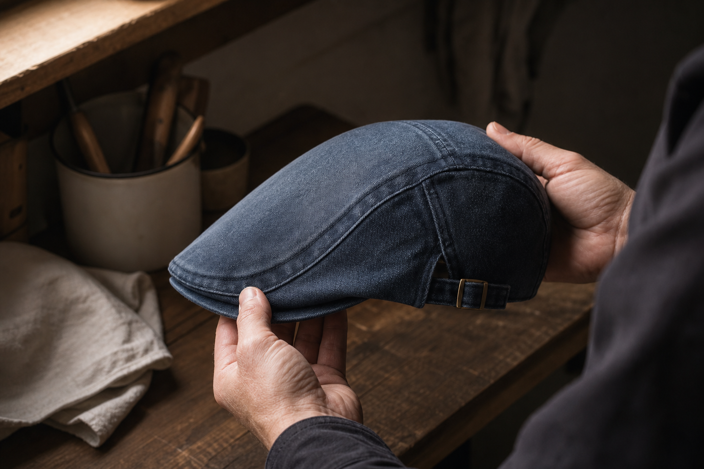
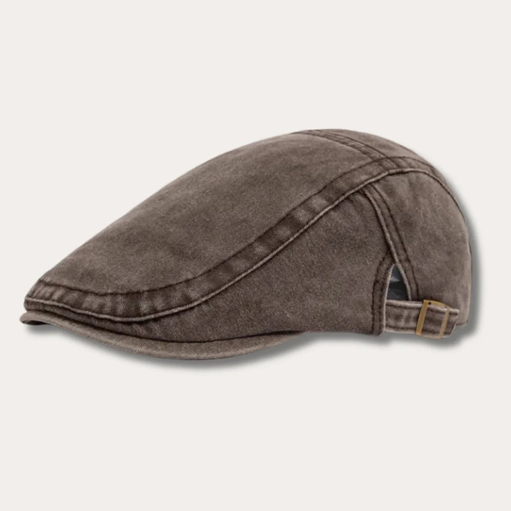
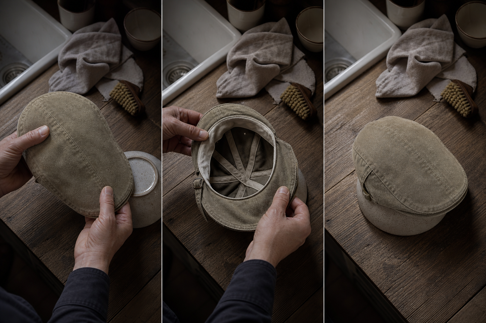

One cut, made to fit
A single cut designed for any head, not a size you have to guess at from a photograph.
The Washed Denim Collection
This one has been worn for months. The inside is the part worth looking at.
You said it yourself: "I can't judge fabric from a photograph." Fair. So don't. Turn the cap over instead.
Inside a cheap cap you find lining glued rather than sewn, and dye that hasn't finished leaving the cloth. Inside this one: a shell in washed denim that was washed as cloth, before the cut, a sewn lining, a cotton headband, and a peak taken from the same piece as the shell.
That is why it creases instead of collapsing. Nothing here is styled. It's just a cap someone kept.
Nine washes, all in stock, free worldwide shipping

Rewind
You said it yourself, out loud, each time you threw one away.
"It bled on my forehead." The first one did, the blue one, and you noticed it in a mirror at work rather than at home.
"It never came back after the rain." The second went soft in the wrong places and stayed that way. You kept it a fortnight out of stubbornness, then it went in the bin with the first.
"The seam scratched." The third one you actually liked. It just itched at the same spot every time, so you stopped reaching for it, which is its own kind of bin.
Three caps, one year, one bin. Nothing unlucky happened to you. Each one failed at a different point, and you replaced rather than kept, because nobody ever gave you a reason to think a cap could be kept at all.

"It itched, so I stopped wearing it." Nineteen percent gave that same answer: it scratched or it gripped. Another thirteen percent simply went off theirs. Nobody bins a cap for one dramatic reason. They bin it because wearing it stopped being worth the bother.
Then the second question, the one about buying online. Fifty-seven percent say sizing. Twenty-nine percent say not being able to see the fabric. Fourteen percent say the return they would have to organise.
Read those two lists together and the picture is plain: men are not replacing caps because they want a new one. They are replacing caps because the last one failed, and they have no way to check the next one won't.
The turn
You believed cloth only ever gets worse. Then think about what you kept longest.
"Fabric goes downhill from the day you buy it." That is what three binned caps taught you, and it held up fine until you looked in the wardrobe.
Because the jeans you have owned the longest are the ones that faded at the knee, creased where you sit and went soft at the seams. They did not survive that wear. They got better because of it. You never once considered replacing them.
The reason is a detail nobody points out: that denim was washed as cloth, before it was ever cut. The shrink and the loose dye left at the mill, not on your body. Raw denim does the opposite. Stiff, then shrinking, then slack.
So the question changes. Not whether this cap will hold out against wear, but what wear will do to it.

The order of operations
"So why did the last blue one run onto my forehead, and this one won't?"
Because of when the wash happens. Our denim is washed as cloth, before a single panel is cut. The shrink and the loose dye leave at the mill, not on your head.
Raw denim does it in the opposite order: stiff at first, then it shrinks, then it goes slack and never comes back. That is the shell you already own, sitting in your hallway with a wave in the peak.
The practical difference is small and it is the whole thing. Soft from the first wear. The size doesn't move after a home wash. Nothing left in the cloth to come out later, because it already came out before the cut.

Anatomy
The words for what you are actually holding.
"Fine, but describe it to me." Right, in the parts.
The shell is the piece over your skull: soft, follows the bone, doesn't grip. The peak is short and flat, taken from the same cloth as the shell rather than added on, so there's no hard break where the two meet. That's what puts the line low on your forehead. Tan suede trim on the outside, a cotton headband on the inside where the seam sits against your skin.
And it folds into a coat pocket without keeping the crease.

Shell against shell
Turn both inside out. The difference is in the seams, not the photograph.
"I cannot judge fabric from a photograph." Then don't. Judge the one you already own, the one hanging by your door, and look at the inside of it.
The cheap marketplace cap has a glued lining. Heat lifts the glue, the lining blisters against your forehead, and the shell goes with it. Ours is cut in panels with the lining stitched in, and the peak comes out of the same piece as the shell, so there is no hard break where the two are joined. The traditional tweed cap holds its line, but it holds heat with it.
This one is a soft shell that follows the skull without gripping. It creases and fades at the friction points. That is the difference between something you mend and something you replace.
| The Washed Denim Collection | Alternative | |
|---|---|---|
| Lining | Stitched into the shell | Glued, lifts and blisters with heat |
| Peak | Cut in the same piece as the shell, no hard break | Joined on, cracks at the seam |
| Shell | Soft, sits low, follows the face | Stiff and warm, or collapsed after rain |
| Sizing | One cut with a side-adjuster: set it once and it stays put | Invented sizes you guess at |
| With wear | Creases, fades at friction points, takes a patina | Dye on your forehead, shape gone |
Wear over months
One dated review, from a man who is three months ahead of you.
"Fine, but by month three it will look like the last one." That sentence deserves an answer, so here is one from someone who has already lived it.
The cap you binned faded where nothing ever rubbed, and went slack where it should have held its line. This one creases at the friction points and keeps its shape. Cloth wearing in, not an accessory wearing out.
No claim about years here. Three months, several washes, one shape.
Three months, several washes, it has taken on a patina without losing its shape.
Verified customer review, 21 February 2026. Ordered XL, no return.

Fit mechanics
"I can't try it on, so I'll get the size wrong." Not with this one.
There is one cut. It is made to fit, and the side-adjuster does the rest: you set it once, on your own head, and it stays put. No guessing between two numbers on a chart, no cap that grips at the temples by the afternoon.
The shell is soft and follows the skull without squeezing, so the adjuster is holding a cap that already sits low rather than forcing one that doesn't. That is the difference with the caps you binned: theirs asked you to be the right size. This one adjusts to the head you have.
Set it, forget it, and if it still doesn't sit right, the 100-Day Fit Guarantee sends your money back.
A single cut designed for any head, not a size you have to guess at from a photograph.
Set it once and it stays put. Impossible to get the size wrong.
It follows your face instead of clamping it, which is why the setting holds all day.
Keeping it
"So how do I not ruin it?" Easier than the three you binned.
You never sent your jeans to be dry-cleaned and you never put them through a hot tumble. Same reflex here. The shell is soft denim and a tan suede trim, and it responds to being handled, not processed.
Hand wash cold, mild soap. Press the water out, never wring. Dry flat on a form, an upturned bowl does the job, and keep it away from the tumble dryer entirely. Store it flat or on that same shape.
That is the whole routine. A cap you keep asks for four minutes now and then. A cap you replace asks for another thirty dollars.

Your own sentences
Three sentences you have already said out loud. Answered one at a time, in your words.
You said it about a cap you were going to keep. You never said it about the three you binned, and those three cost you more than this one will.
That is the whole argument: count seasons, not tickets. A cap kept and mended for four winters is cheaper than three replaced in twelve months.
You are right, and you are not alone: 29% of men say not seeing the material is what stops them buying online. So don't judge it on screen. Judge it on your head, outdoors, for 100 days.
Here is the honest limit. This is not a sports cap. It sits low, it doesn't shade like a long peak, and it will not stay put on a bike at speed. If that is what you want, buy the other thing.
Compared to what? Three cheap caps binned in a year cost more than one kept four winters. The ticket is the wrong unit; the season is the right one.
Nor can 29% of the men who never finish the order for exactly that reason. Nothing on a screen fixes that. Wearing it does.
No. It doesn't cover the forehead like a long peak and it won't hold on a bike at speed. Saying so now saves you the return.
100-Day Fit Guarantee
"And if it doesn't suit me?" Then it goes back, and you're no worse off than the day you binned the third one.
You said you can't judge cloth from a photograph. So don't. Put it on and walk out in it. Wear it in the wind, in the rain, on the school run, in the pub. A mirror tells you nothing a hundred days of wearing won't tell you better, and this is the one cap you're allowed to test that way.
The cheap replacement gave you nothing. No guarantee, no support, and a bin as the only exit. Here the exit is a refund: 100 days, money back, free worldwide shipping with no minimum on the way in. Payments encrypted, card details not stored, support around the clock, seven days a week.
That's the whole risk. It sits right, or it costs you nothing.
It sits right, or your money back.
Before the fourth cap
Five sentences we hear often, answered the way we would answer them on the phone.
Every one of these came from a man who had already binned something. So none of them get a sales answer.
Where the honest answer is "write to us first", that is the answer you get.
The denim is washed as cloth before the cut, so the excess dye leaves at the mill, not on your skin.
Cotton denim breathes. The cap you're comparing it to, lined in polyester under a long peak, is the warmer one.
A long peak and a stiff cloth make you look old. A short peak, a soft shell and washed denim don't. Look at a profile shot before you decide.
There is one cut, and the side-adjuster sets it. Set it once and it stays put, on any head.
Then email help@ashcroft-flatcaps.com before you order rather than after. We'd rather answer a question than process a return.
Keeping, not replacing
Nine caps, all in stock, and the collection keeps growing.
"So which one?" That's the only question left. Everyday light blue if you want the one that disappears into everything you own. Burgundy if you're done being careful.
Either way you're not buying a replacement. You're buying the one that stops the cycle.
It sits right, or your money back. Free worldwide shipping, no minimum.